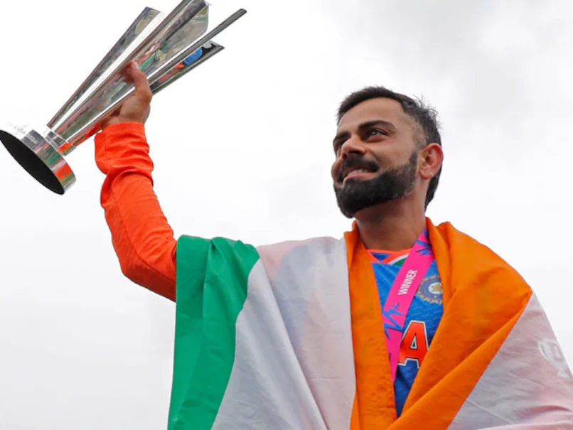
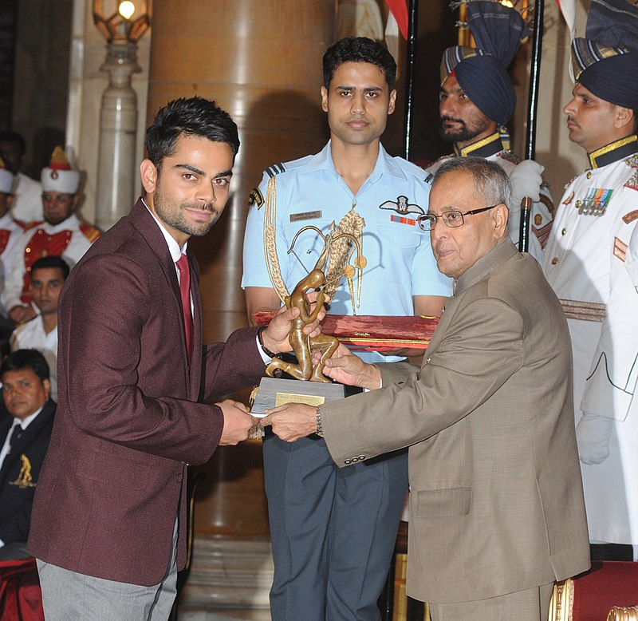

Virat Kohli

About the Legend
- Virat Kohli was born on 5 November 1988 in Delhi into a Punjabi Hindu family. His father, Prem Nath Kohli, worked as a criminal lawyer, and his mother, Saroj Kohli, served as a housewife.
- According to his family, Kohli exhibited an early affinity for cricket as a three-year-old. He would pick up a cricket bat and request his father to bowl to him.
- Kohli's batting style and approach to the game have frequently drawn comparisons to the legendary Sachin Tendulkar, who he regarded as the epitome of excellence in the sport of cricket.
- Kohli's aggressive and dynamic style has earned him accolades from cricketing greats such as Vivian Richards, who has acknowledged Kohli's similarities to his own playing style.
- He has been lauded as the "new king of world cricket" by Dean Jones, a former Australian cricketer.
- Kohli is considered as an enterprising batsman, possessing technical abilities and a dynamic playing demeanour.He is appreciated for his ability to execute wrist shots and his consistent prowess in the mid-wicket and cover region
- In 2013, Kohli established the "Virat Kohli Foundation" with a philanthropic objective to support underprivileged children.The foundation collaborates with a selected group of NGOs to increase awareness and gather support for various causes that are instrumental in advancing their mission of promoting the welfare and well-being of these children.
- On 11 December 2017, Virat Kohli and Anushka Sharma exchanged nuptials in an intimate ceremony held in Florence, Italy, becoming one of the most talked-about celebrity couples in the country.
- On 11 January 2021, the couple had their first child, a daughter, who was named Vamika. The child's name, Vamika, is derived from Sanskrit, meaning "little goddess". On 15 February 2024, the couple welcomed their second child, a boy named Akaay.
- In 2016, the Virat Kohli Foundation entered into a partnership with Smile Foundation to promote the empowerment of underprivileged children and young people.
- Prior to a match against Sri Lanka in the 2017 Champions Trophy, Kohli hosted a benevolent gala event in London in support of the Justice and Care organization. The ball was arranged with the objective of increasing both funds and awareness for the humanitarian cause championed by Justice and Care. The organization endeavors to combat the pernicious issues of human trafficking and contemporary slavery.
- Kohli holds a prominent place in the annals of Indian cricket. He has the distinction of being the only cricketer to have been named the Player of the Tournament in the T20 World Cup on two separate occasions, in 2014 and 2016.
- In terms of ODI centuries, he ranks first with 50.He surpassed Sachin Tendulkar's tally of 49 ODI tons and achieved this feat on 15 November 2023 in the semifinal of the 2023 Cricket World Cup, while also becoming the first player to score more than 700 runs in a single edition of the tournament.
- In international cricket, Kohli has amassed 80 centuries, second only to Sachin Tendulkar's 100 centuries.In 2018, Kohli set a record, becoming the first player to score 1,000 ODI runs in 11 innings in a calendar year.In 2022, he achieved another milestone by scoring 1,000 runs in the ICC Men's T20 World Cup, becoming the second player to reach this feat after Mahela Jayawardene. During the match against Bangladesh, he became the top-scorer in the history of T20 World Cup.
- Virat Kohli announced his retirement soon after India won the T20 World Cup defeating South Africa in the final at Kensington Oval in Barbados 2024

NATIONAL HONOURS
- 2013 – Arjuna Award, second highest sporting honour.
- 2017 – Padma Shri, India's fourth highest civilian award.
- 2018 – Major Dhyan Chand Khel Ratna Award, India's highest sporting honour.

For more information about Virat Kohli check out on Wikipedia.[Developed by @Divya_Bhakt]